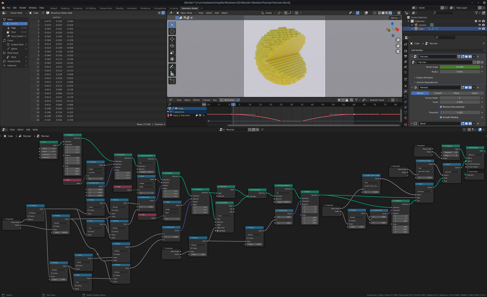

Pacman
I made a Pacman!
Blender YouTuber Default Cube uploaded a video tutorial on how to make a Pacman with Blender Geometry Nodes.
Before watching how he did it, I tried my own hand at doing it and this is the result!
It took me two attempts and about two hours of fiddling until I got it looking nice, but I am very happy with the outcome :)
Here is the final node-tree:

I posted it on ArtStation, too, so give me a like and a follow over there if you want: https://www.artstation.com/artwork/KO9Y1o